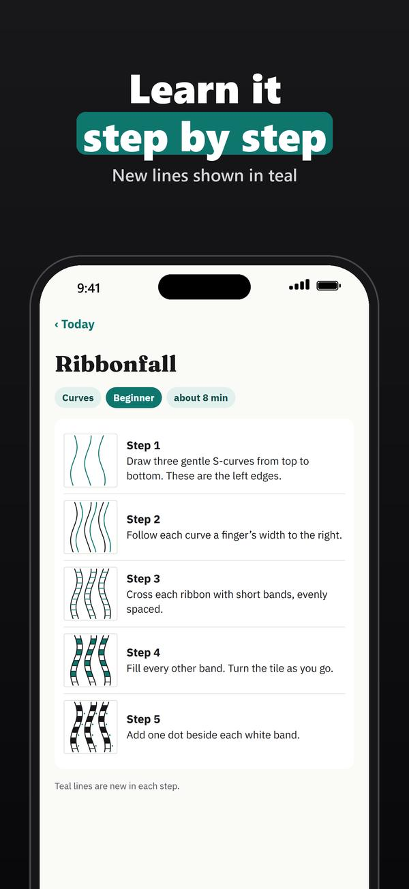
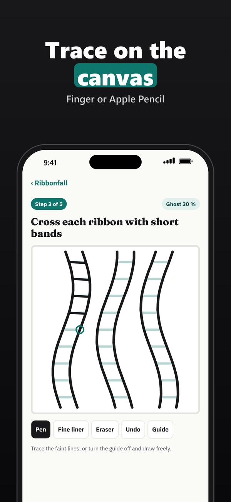
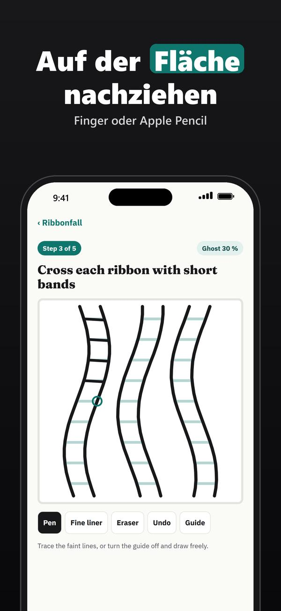
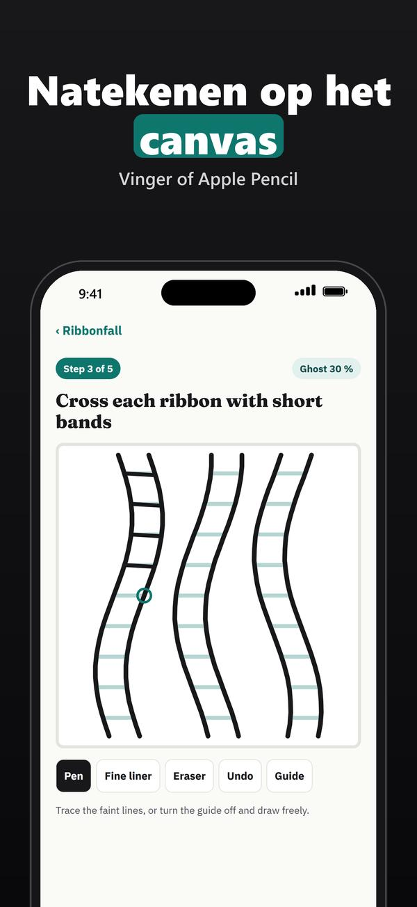
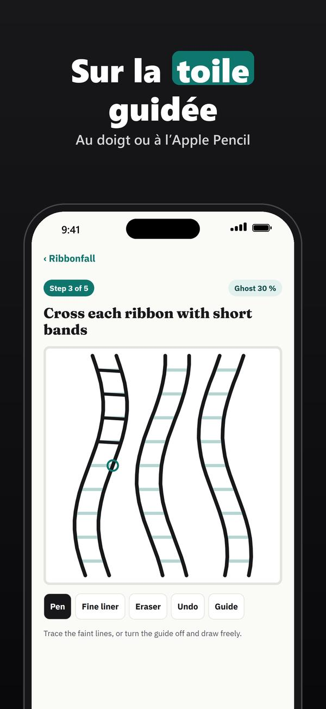
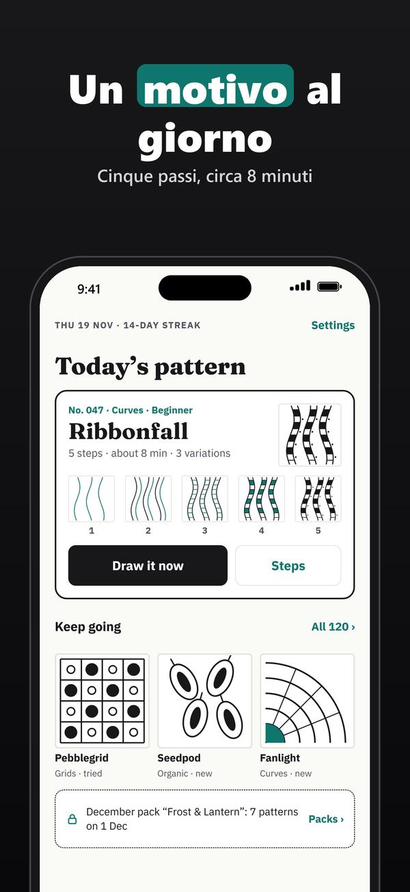
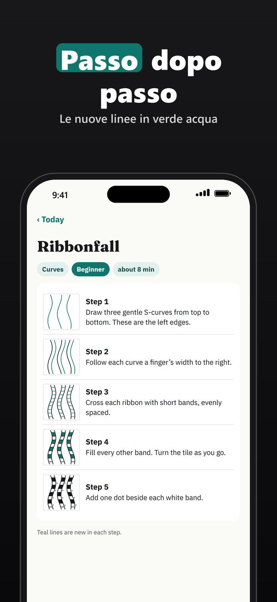
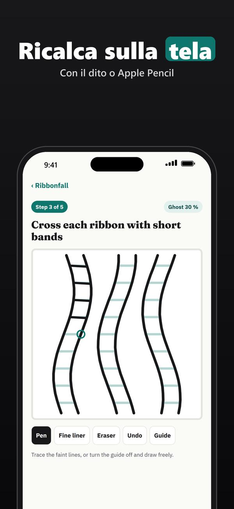
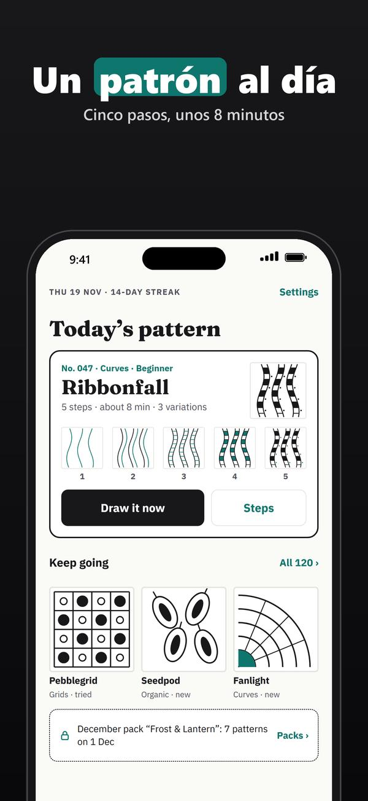

One new pattern a day, drawn in five easy steps. Trace it on screen with your finger or Apple Pencil, then keep your paper tiles in one journal.


Pattera is a library of 120 original doodle patterns, each broken into four to six simple steps. Every day there is a pattern waiting for you, with the new lines of each step shown in teal. Trace it on the guided canvas with a faint step layer underneath, or draw on paper and scan your tile into the journal. A new pack of patterns arrives every month.
120 original patterns: grids, curves, organic, borders, fills, strings
Pattern of the day with a five-step strip on your Home Screen
Guided canvas: trace each step over a faint layer, finger or Apple Pencil
Tile journal: scan paper tiles or save tiles drawn on screen
A new pack of 6–8 patterns every month
Variations and difficulty for every pattern
Streak, progress and collections of your favourites
iCloud on iPhone and iPad, widget and Siri
Without a subscription: 20 patterns, the pattern of the day and 10 journal tiles. Pattera Plus is a monthly or yearly subscription: all 120 patterns plus a new pack every month, the guided canvas for every pattern, an unlimited tile journal and iCloud sync. Renews automatically; cancel anytime in your Apple Account settings. No ads, no account.
Pattera is an independent app and is not affiliated with any drawing method, brand or teacher. Every pattern, step drawing and pattern name is our own.
Jeden Tag ein neues Muster in fünf einfachen Schritten. Zeichne es mit Finger oder Apple Pencil nach und sammle deine Papierkacheln in einem Tagebuch.

Pattera ist eine Bibliothek mit 120 eigenen Doodle-Mustern, jedes in vier bis sechs einfache Schritte zerlegt. Jeden Tag wartet ein Muster auf dich, die neuen Linien jedes Schritts sind türkis markiert. Zeichne es auf der geführten Zeichenfläche über einer blassen Vorlage nach oder zeichne auf Papier und scanne deine Kachel ins Tagebuch. Jeden Monat kommt ein neues Musterpaket dazu.
120 eigene Muster: Raster, Kurven, organisch, Bordüren, Flächen, Linienzüge
Muster des Tages mit Fünf-Schritte-Leiste auf dem Home-Bildschirm
Geführtes Zeichnen: jeden Schritt über einer blassen Vorlage, Finger oder Apple Pencil
Kachel-Tagebuch: Papierkacheln scannen oder Bildschirmkacheln sichern
Jeden Monat ein neues Paket mit 6–8 Mustern
Varianten und Schwierigkeit für jedes Muster
Serie, Fortschritt und Sammlungen deiner Lieblinge
iCloud auf iPhone und iPad, Widget und Siri
Ohne Abo: 20 Muster, das Muster des Tages und 10 Kacheln im Tagebuch. Pattera Plus ist ein Monats- oder Jahresabo: alle 120 Muster und jeden Monat ein neues Paket, geführtes Zeichnen für jedes Muster, unbegrenztes Kachel-Tagebuch und iCloud-Synchronisierung. Verlängert sich automatisch, jederzeit in den Einstellungen deines Apple Accounts kündbar. Keine Werbung, kein Konto.
Pattera ist eine unabhängige App ohne Verbindung zu einer Zeichenmethode, Marke oder Lehrperson. Alle Muster, Schrittzeichnungen und Musternamen sind unsere eigenen.
Elke dag een nieuw patroon in vijf eenvoudige stappen. Teken het na met je vinger of Apple Pencil en bewaar je papieren tegels in één dagboek.

Pattera is een bibliotheek met 120 eigen doodle-patronen, elk opgedeeld in vier tot zes eenvoudige stappen. Elke dag staat er een patroon voor je klaar, de nieuwe lijnen van elke stap in turquoise. Teken het na op het begeleide canvas met een vage stap-laag eronder, of teken op papier en scan je tegel in het dagboek. Elke maand komt er een nieuw pakket patronen bij.
120 eigen patronen: rasters, bochten, organisch, randen, vlakken, lijnen
Patroon van de dag met een strook van vijf stappen op je beginscherm
Begeleid canvas: elke stap over een vage laag, vinger of Apple Pencil
Tegeldagboek: papieren tegels scannen of schermtegels bewaren
Elke maand een nieuw pakket met 6–8 patronen
Variaties en moeilijkheid voor elk patroon
Reeks, voortgang en verzamelingen van je favorieten
iCloud op iPhone en iPad, widget en Siri
Zonder abonnement: 20 patronen, het patroon van de dag en 10 tegels in het dagboek. Pattera Plus is een maand- of jaarabonnement: alle 120 patronen en elke maand een nieuw pakket, begeleid canvas voor elk patroon, onbeperkt tegeldagboek en iCloud-synchronisatie. Verlengt automatisch, altijd op te zeggen in de instellingen van je Apple Account. Geen reclame, geen account.
Pattera is een onafhankelijke app zonder band met een tekenmethode, merk of docent. Alle patronen, staptekeningen en patroonnamen zijn van ons.
Un nouveau motif chaque jour, en cinq étapes simples. Reproduisez-le au doigt ou à l’Apple Pencil, puis gardez vos carreaux papier dans un seul carnet.

Pattera est une bibliothèque de 120 motifs de doodle originaux, chacun décomposé en quatre à six étapes simples. Chaque jour, un motif vous attend, avec les nouveaux traits de chaque étape en turquoise. Reproduisez-le sur la toile guidée au-dessus d’un calque pâle, ou dessinez sur papier et scannez votre carreau dans le carnet. Un nouveau pack de motifs arrive chaque mois.
Motif du jour avec une bande de cinq étapes sur l’écran d’accueil
Toile guidée : chaque étape sur un calque pâle, au doigt ou à l’Apple Pencil
Carnet de carreaux : scanner le papier ou garder les carreaux dessinés à l’écran
Un nouveau pack de 6 à 8 motifs chaque mois
Variantes et niveau pour chaque motif
Série, progrès et collections de vos favoris
iCloud sur iPhone et iPad, widget et Siri
Sans abonnement : 20 motifs, le motif du jour et 10 carreaux dans le carnet. Pattera Plus est un abonnement mensuel ou annuel : les 120 motifs et un nouveau pack chaque mois, la toile guidée pour chaque motif, un carnet illimité et la synchronisation iCloud. Renouvellement automatique, résiliable à tout moment dans les réglages de votre compte Apple. Sans publicité, sans compte.
Pattera est une app indépendante, sans lien avec une méthode de dessin, une marque ou un enseignant. Tous les motifs, dessins d’étapes et noms de motifs sont les nôtres.
Ogni giorno un nuovo motivo in cinque passi semplici. Ricalcalo con il dito o con Apple Pencil e conserva le tue piastrelle di carta in un unico diario.



Pattera è una libreria di 120 motivi doodle originali, ognuno diviso in quattro-sei passi semplici. Ogni giorno ti aspetta un motivo, con le nuove linee di ogni passo in verde acqua. Ricalcalo sulla tela guidata sopra un livello tenue, oppure disegna su carta e scansiona la piastrella nel diario. Ogni mese arriva un nuovo pacchetto di motivi.
Motivo del giorno con una striscia di cinque passi nella schermata Home
Tela guidata: ogni passo sopra un livello tenue, con il dito o Apple Pencil
Diario delle piastrelle: scansiona la carta o salva quelle disegnate a schermo
Ogni mese un nuovo pacchetto di 6–8 motivi
Varianti e difficoltà per ogni motivo
Serie, progressi e raccolte dei preferiti
iCloud su iPhone e iPad, widget e Siri
Senza abbonamento: 20 motivi, il motivo del giorno e 10 piastrelle nel diario. Pattera Plus è un abbonamento mensile o annuale: tutti i 120 motivi e un nuovo pacchetto ogni mese, la tela guidata per ogni motivo, diario illimitato e sincronizzazione iCloud. Rinnovo automatico, disdici quando vuoi nelle impostazioni dell’account Apple. Nessuna pubblicità, nessun account.
Pattera è un’app indipendente, senza legami con metodi di disegno, marchi o insegnanti. Tutti i motivi, i disegni dei passi e i nomi sono nostri.
Cada día un patrón nuevo en cinco pasos sencillos. Cálcalo con el dedo o el Apple Pencil y guarda tus azulejos de papel en un solo diario.

Pattera es una biblioteca de 120 patrones de garabato originales, cada uno dividido en cuatro a seis pasos sencillos. Cada día te espera un patrón, con las líneas nuevas de cada paso en turquesa. Cálcalo en el lienzo guiado sobre una capa tenue, o dibuja en papel y escanea tu azulejo en el diario. Cada mes llega un paquete nuevo de patrones.
Patrón del día con una tira de cinco pasos en la pantalla de inicio
Lienzo guiado: cada paso sobre una capa tenue, con el dedo o el Apple Pencil
Diario de azulejos: escanea el papel o guarda los dibujados en pantalla
Cada mes un paquete nuevo de 6–8 patrones
Variaciones y dificultad para cada patrón
Racha, progreso y colecciones de tus favoritos
iCloud en iPhone y iPad, widget y Siri
Sin suscripción: 20 patrones, el patrón del día y 10 azulejos en el diario. Pattera Plus es una suscripción mensual o anual: los 120 patrones y un paquete nuevo cada mes, lienzo guiado para cada patrón, diario ilimitado y sincronización con iCloud. Se renueva automáticamente; cancela cuando quieras en los ajustes de tu cuenta de Apple. Sin anuncios, sin cuenta.
Pattera es una app independiente, sin relación con ningún método de dibujo, marca o profesor. Todos los patrones, dibujos de pasos y nombres son nuestros.